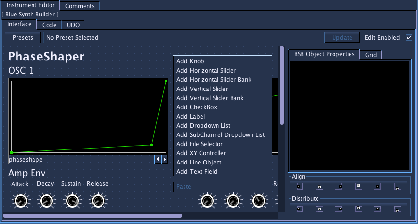
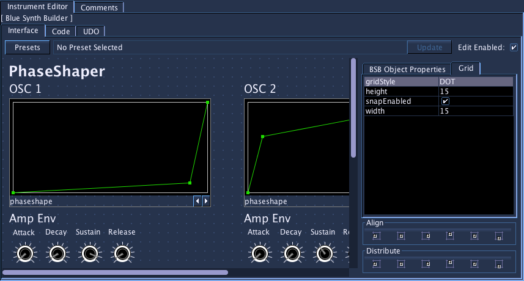
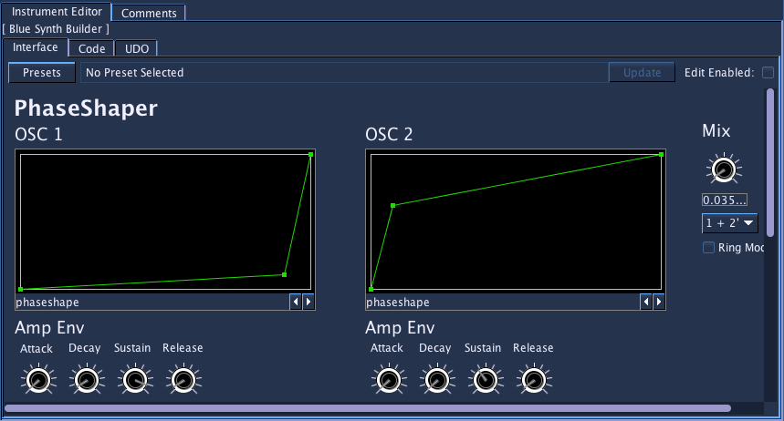

BlueSynthBuilder
Introduction
BlueSynthBuilder (BSB) allows the user to graphically build instrument interfaces for their Csound instruments. The graphical interface is designed for the use of exploring configuration of an instrument as well as adjustment to values in realtime(requires enabling using the Csound API, see here.
About BlueSynthBuilder
Principles of Design
It has been my experience that most Csound instruments tend to be limited in user configurability of parameters than commercial synthesizer counterparts. It is my belief that a large part of that is due to the text-based nature of instruments. I've found that:
-
Modular instruments are easier to express connections of modules via text or code rather than visual paradigms (patch cables, line connections), and thus easier to create the instrument by text
-
Graphical elements, however, excel in relaying information about the configuration of the instrument to the user and also invite experimentation, while text-based configuration of instruments is often more difficult to quickly understand the parameters settings and limits
Hybrid Design
Going completely graphical for the building of instruments, in the case of systems like Max/PD/jMax or Reaktor, I've found that the instrument's design no longer become apparent when viewing complicated patches. On the other hand, using completely textual systems such as Csound or C++ coding, the design of the instrument has a degree of transparency, while the configuration of the parameters of the instrument becomes difficult to understand and invites less exploration.
Using systems like MacCsound's widgets or Blue's BlueSynthBuilder, one is able to use graphical elements where they excel, in showing configuration of an instrument and for manipulation of values, while using textual elements where they excel, in the design of instruments and expressing the connections between modules.
I have found that this sort of hybrid design offers the best of both worlds and when I am spending time building and using new instruments, I can quickly design an instrument and also explore the parameters of an instrument's design by using BlueSynthBuilder.
Using BlueSynthBuilder
BlueSynthBuilder is divided up into three tabs, each of which handles the different concerns of the instrument builder. Also, the process of creating instruments and using instruments is also split between editand usage modes. Instrument builders will tend to use both modes, while users of BSB instruments may not ever have to touch a line of Csound instrument code or have to modify the instrument UI at all.
Interface Editor
The Interface editor has two modes:

Edit Mode
The user can add interface elements and modify their properties using the property sheet on the right. To enable edit mode, click on the "Edit Enabled" checkbox in the upper right of the BSB instrument editor.
Once the edit mode is enabled, right clicking in the main panel will show a popup menu of available UI widgets for your instrument. After selecting and inserting a widget, clicking on the widget will hilight it and show it's properties in the property editor. You can also then drag the widget around to place as you desire.
You may select multiple widgets by shift-clicking them, or by clicking on an empty part of the edit panel and dragging a marquee to select a group of widgets. After selecting multiple widgets, you can drag them around as a group, as well as use the alignment and distribution options found on the right side bottom to tidy up the UI.
Grid Settings

When in edit mode, you can modify the Grid Settings by using the properties editor on the right-hand side. This allows you set the following values:
| Property | Description |
|---|---|
| Grid Style | Affects the visual style of the Grid. Options are NONE, DOT, or LINE. |
| Snap Enabled | Affects whether adding, pasting, and dragging of BSBObjects in the editor will snap to the grid. |
| Width | Sets the width of each grid box. Defaults to 15 pixels. |
| Height | Sets the height of each grid box. Defaults to 15 pixels. |
Usage Mode

Once in usage mode, users can configure the instrument by working with the UI widgets: rotating knobs, moving sliders, etc. The values of the different UI widgets will be reflected in the generated Csound instrument and will affect the values in realtime if using the Csound API.
Code Editor
The code editor is where the Csound instrument code is to be written. To use the values from the widgets, use the replacement key of the widget within < >'s, and that value will be replaced when the instrument is generated (the replacement key is usually the objectName of the object; see table below).
For example, if there's a knob with an objectName of amplitude and the value is set to 0.5, the following instrument code:
iamp = <amplitude> * 0dbfs
aout vco2 iamp, 440
outs aout, aout
will generate the following instrument:
iamp = 0.5 * 0dbfs
aout vco2 iamp, 440
outs aout, aout
For convenience, the standard code completion popup will auto-complete text for replacement keys. When editing code, type "<" then press ctrl-space. The standard code completion popup will show a list of all of the replacement keys that have been assigned to interface objects. Selecting a replacement key will insert that key into the code text area, already formatted within < and >.
Always-On Instrument Code
MIDI and acoustic instruments often break down into sound generation qualities that are per-note as well as per-instrument. Having always-on code that can be encapsulated with the instrument allows modeling things like body filters as well as adding effects like chorus/echo/reverb to the instrument itself. While one can always add always-on effects to a mixer channel, having the capability to add these features to an instrument can be useful as part of the instrument's design.
To use this, one writes code in teh Always-On code tab. The code from this tab will be used to generate an instrument that will be run after the primary instrument code, and will have a single instace of the generated instrument running for the duration of the instrument. The signal from the main instrument code should be written out using the blueMixerOut pseudo-opcode. If the always-on code is disabled, the audio will go from the instrument to the mixer. If the always-on code is enabled, the signal generated from the main instrument code will be intercepted and read by the always-on instrument. To facilitate this feature, there is Blue pseudo-opcode called blueMixerIn:
asig1 [, asig2...] blueMixerIn
The always-on code should then do processing code, then write out to blueMixerOut.
To note, BSB widget values work perfectly fine when used within always-on code.
Widget Values
The following lists what values the widgets will emit when generating instruments:
| Widget | Replacement Key | Value |
|---|---|---|
| Knob | objectName | float value from knob |
| Horizontal Slider | objectName | float value from slider |
| Horizontal Slider Bank | objectName_sliderNum (for each slider) | float value from slider |
| Vertical Slider | objectName | float value from slider |
| Vertical Slider Bank | objectName_sliderNum (for each slider) | float value from slider |
| Label | none | none |
| Checkbox | objectName | 1 or 0, depending on if checked or not |
| Dropdown List | objectName | Generates index of selected item when item is made automatable, or uses value from user-assigned Dropdown List |
| SubChannel Dropdown List | objectName | Value from Dropdown List that is a named subchannel from the Blue Mixer |
| XY Controller | objectNameX, objectNameY | X and Y value |
| LineObject | objectName_lineName (for each line) | list of values from line (can be comma separated, with or without leading 0.0 X value, and x values can be generated either in absolute or relative terms) |
| Text Field | objectName | Value from text field (compile-time only). |
| File Selector | objectName | If stringChannelEnabled is selected, outputs a Csound string variable (S-var) that can be updated at runtime if API is enabled, if stringChannelEnabled is set to off, outputs as a string (without quotes) at compilation time |
| Value | objectName | Generates using its default value or values from automation. Widget is only visible during edit mode. |
Groups
Widgets may be organized into Groups that provide titled border around the set of widgets. Double-clicking on a group will allow editing of the group's set of widgets. The Breadcrumb bar that appears when edit mode is enabled allows for navigating back up the hierarchy of groups to the root group for the interface.
Users may either start by creating an empty group, double-clicking, then editing the interface for the group. Optionally, they may select a number of existing widgets, right-click on one of the selected widgets, then choose "Make Group" to embed the selected widgets within a group.
Presets
Since 0.95.0, BlueSynthBuilder now has the capability to save and load presets. These presets are for usage-time and not design-time, and they save a snapshot of all of the values for the widgets. They do not save x/y coordinates or other configuration for the widget, only the value.
You can add presets and folders of presets using the presets menu in the upper left of the BSB editor. Each menu has an option for adding a folder or adding a preset to it. You can also manage presets by using the "Manage Presets" button. This will open up a dialog with a tree view of your presets, allowing you to rename the presets and folders, as well as reorganize by dragging and dropping. You can remove presets and folders here by right-clicking and selecting the remove option. Changes in the dialog are not committed until you press the save button, so if you close the window or cancel, you're old settings will be still in tact.
Automation
Blue supports automation of BSB Widget values for those which support automation. For these widgets, automation must be enabled before they allowed to be automated. When making them automatable, the place in Csound instrument code where the widget value will be added to the generated Csound code must be a place where a k-rate signal is allowed, otherwise the code will not compile and Csound will not run the project. This is required because when using the Csound API, the signal will need to be k-rate to allow for live modification of the value when rendering.
More information on paramenter automation can be found here.
Note
In 0.124.3, a change was made that breaks backwards compatibility. Previously, if a BSBObject was set to have "Automation Allowed" but was not itself automated, it would compile as a constant in the generated CSD. As of 0.124.3, if a widget is made to allow automation, the Csound code that uses the widget value must accept a k-rate signal, whether the API is used or not.
If you have a project that rendered fine before 0.124.3 but afterwards can not render due to problems with Csound complaining that "k-rate signals not allowed", then you will need to either set the widget to not allow automation or change the Csound code so that it will work with the generated k-rate signal.
Randomization
Since 0.117.0, users are able to randomize values for widgets in a BlueSynthBuilder instrument. To use, first choose which widgets are set to be randomized in edit mode, then in usage mode, right click on the panel in an area not covered by a widget, then select "Randomize" from the popup menu. The following widgets are cable of being randomized:
-
Knob
-
Horizontal Slider
-
Vertical Slider
-
Horizontal Slider Bank
-
Vertical Slider Bank
-
XY Controller
-
Checkbox
-
Dropdown List